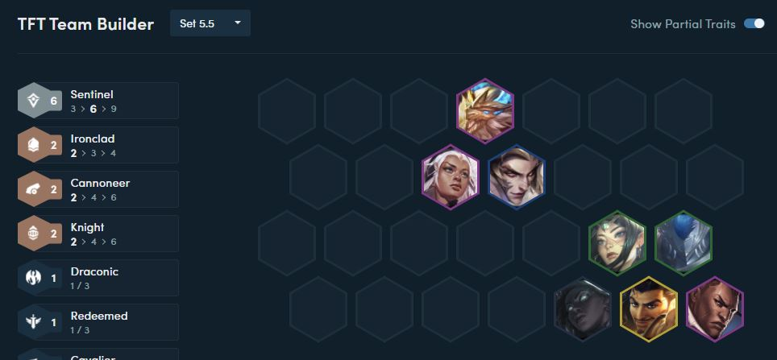

TFT Set 5.5 Strategies
Topic: Discussing the Sentinel Cannoneers Composition
Date: October 3, 2021
Audio/Video of Meeting
Agenda
In today's meeting we will discuss how to play the Sentinel Cannoneers Composition in TFT Set 5.5. We will overview the traits involved in the composition, the champions, the items, and the playstyle of the composition.Unfinished Business From Last Meeting
We did not finish talking about the strategies that concern Fast 8 or Fast 9 compositions like Abomination Revenants that revolve around high-cost carries and high-cost front line units. We will revisit this topic as well as more late game focused comps in future meetings.New Business That Needs To Be Talked About
The most recent 11.19 patch has experienced a surge of reroll players consistently forcing compositions like Dawnbringer Assassins (Gragas and Kha'Zix reroll) and Hellion Knights (Kled and Ziggs reroll). We will discuss these comps in future meetings, how to play them, when to play them, the itemizations, etc.Attendance List
List of all members who attended the meeting:- Joe
- Candice
- Bobby
- Jonny
- Darryl
- David
- Manny Pacquiao
- Kanye West
- Luka Doncic
Trait Overview

The first thing we will discuss in this meeting is an overview of the main traits involved in this composition.
Sentinel
At start of combat, the Sentinel with the highest Health gains a shield that grants Attack Speed each time it is applied. When the shield is destroyed or expires it will pass to the ally with the lowest percent Health.
- [3] 175 Shield, +25% Attack Speed, 4 sec duration
- [6] 900 Shield, +90% Attack Speed, 2 sec duration
- [9] 2000 Shield, +500% Attack Speed, 1 sec duration
Every fifth Cannoneer attack is replaced with a cannon shot that deals a percent of that attack's damage in an explosion around the target as physical damage.
- [2] 225% damage
- [4] 475% damage
- [6] 1200% damage
Playstyle
This composition revolves around Lucian as the main carry (or Akshan if you hit him later). There are multiple front-lines that are possible with this comp, though the most common one that I play and see is the Knight-Ironclad front-line that is focused on Galio, Rell, and Nautilus. As mentioned earlier, you can drop Nautilus and Rell and flex your front line with something like Revenants (Volibear, Ivern, Fiddlesticks) or Mystics (Gwen, Lulu); it's all situational.On the first carousel, you should prioritize grabbing a B.F. Sword for Lucian because it is very flexible and can build into many solid items for Lucian (and Akshan) like Deathblade, IE, Bloodthirster, etc.
Level 5 Ideal Comp
In your early game, focus on grabbing all the Sentinel units. In my opinion, the strongest Level 5 composition to run if you are planning on going the direction of Sentinel-Cannoneers is Olaf, Irelia, Senna, Kennen, and Tristana. Running the comp at Level 5 gives you: Sentinel, Cannoneer, Hellion, and Skirmisher. If you are lucky enough to hit this at Level 5 and have some two-star units, you are guaranteed to win streak for the entirety of Stage 2 and maybe even Stage 3.Throughout the mid-game you just want to play your strongest board, Tristana can be an item holder for Lucian later on, or you can grab another reliable AD source like Nidalee to hold the items (still maintaing the Skirmisher trait). Focus on completing your Lucian's items on carousel and creeps. Best-In-Slot Lucian is IE, JG, and HoJ. You can also work on building tank components for your front-line. Gargoyle's Stoneplate for Galio is really good.
The Radiant Item pick at the end of Stage 3 is also really flex. Just grab whatever you're missing. Lucian is really nice because he is one of the most flexible carries in this set. You can literally run any Radiant Item on him: JG, IE, Deathblade, LW, HoJ, BT, Warmogs, Titan's, DCap, etc. Some other good Radiant Items to pick are the Radiant Utility Items like Banshee's Claw or Zephyr, or a tank item for your front line.
Level 8 Comp (Naut-Rell Front Line)
In the late game, you should be running 6 Sentinels and 2 Cannoneers and the front-line can be flexed. Like I mentioned earlier, the most common front-line that I play and see is the Naut-Rell front-line that gives Knight and Ironclad.
Level 9 Comp (Rich Man's Comp/Armenia)
Another front-line variation you can do uses the Revenant units instead of Nautilus and Rell. This variation is colloquially known as the "Rich Man's Comp" or "Armenia" due to the expensive cost of the front-line units.Positioning
For positioning, just make sure that your carries are back-lined and your tanks are front-lined. Ideally, you would want to place your Lucian in one of the corners and have it so that the opposing carry is along the diagonal. I like to solo front-line my Galio so that the Gargoyle's Stoneplate gets maximum value. All the other front line units, I put one row behind Galio, unless it's Volibear or Ivern, they have important casts, so I front line them as well. I don't like leaving my Lucian's adjacent hexes open, so I usually put some kind of meat shield in the row in front of him to protect him.Note
Remember to dodge Zephyrs and Shrouds!Miscellaneous
Comments
- Wow! This composition seems really fun, easy, and flexible!
- I forced this composition all the way from Gold to Masters!
Questions
- Are there any situations where I wouldn't corner the Lucian?
- What happens if I don't hit?!
- Should I ever get rid of Senna? She is only a 1-Cost unit, right?
Concerns
- Forcing this composition in the current reroll meta may cause you to lose a lot more health than your opponents because they hit earlier than you
- It's really easy to counter Lucian with positioning, you can just block your carry with tanks along the diagonal